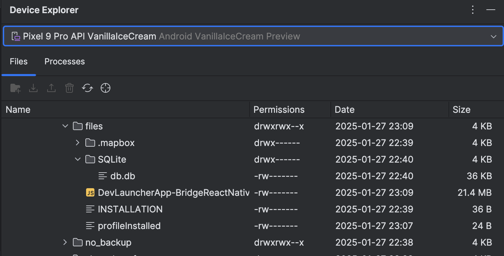

Accessing your Expo-SQLite Database File on iOS and Android
When interacting with an Expo-SQLite database, the first thing you need to do is to open a database connection:
const db = await SQLite.openDatabaseAsync('sqlite.db');
The string you pass as an an argument is the name of the database file.
Here is how to locate and access that file on both iOS and Android.
This assumes that you are using a development build of your app.
iOS
iOS simulators store their data in a regular directory on on your mac. Knowing the database name and the location of your simulators, it is now easy to find the actual database file:
find ~/Library/Developer/CoreSimulator/Devices -name <database-name> -print
Of course you can now plug this into your sqlite cli:
sqlite3 $(find ~/Library/Developer/CoreSimulator/Devices -name <database-name>)
Android
Make sure the Android simulator is running for this section.
CLI
Android’s simulator files have their own representation that is not directly browsable from the main file system. Luckily, Google provides us with the Android Debug Bridge as part of the Android SDK.
adb shell allows direct access to the simulated device and therefore the files on it. However, you don’t have permissions to access application data by default. To do so simply pass run-as with your application’s name. Launch the simulator and run
adb shell run-as <com.yourpackage.name> ls /data/data/<com.yourpackage.name>/files/SQLite
You should see your database file. To get it into your file system, simply use cat:
adb shell run-as <com.yourpackage.name> cat /data/data/<com.yourpackage.name>/files/SQLite/<database-name> > android-sqlite.db
Android Studio
Launch Android Studio and open up any prject. Go to View > Tool Windows > Device Explorer and find your database file under /data/data/<com.yourpackage.name>/files/SQLite/.

And that’s it, happy querying!